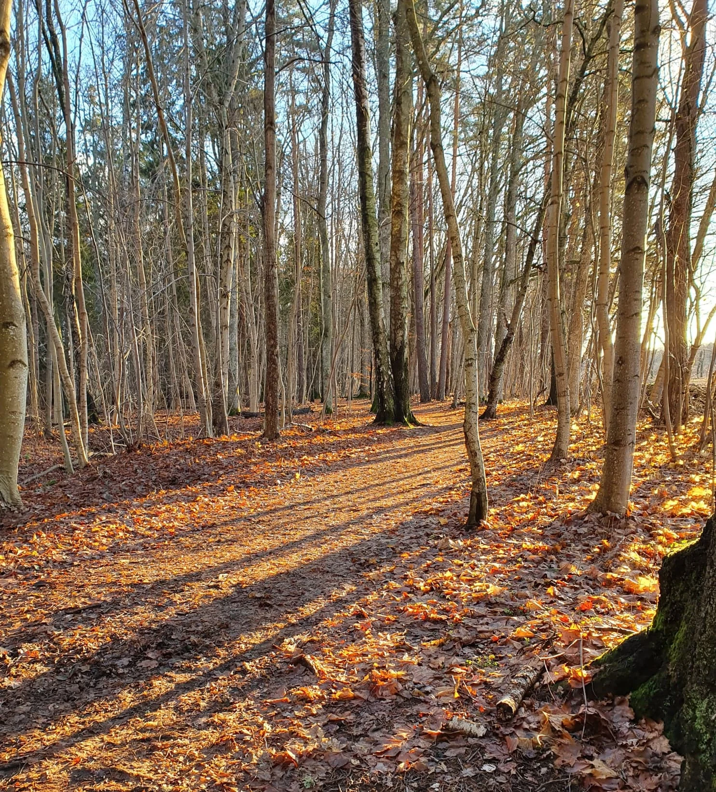
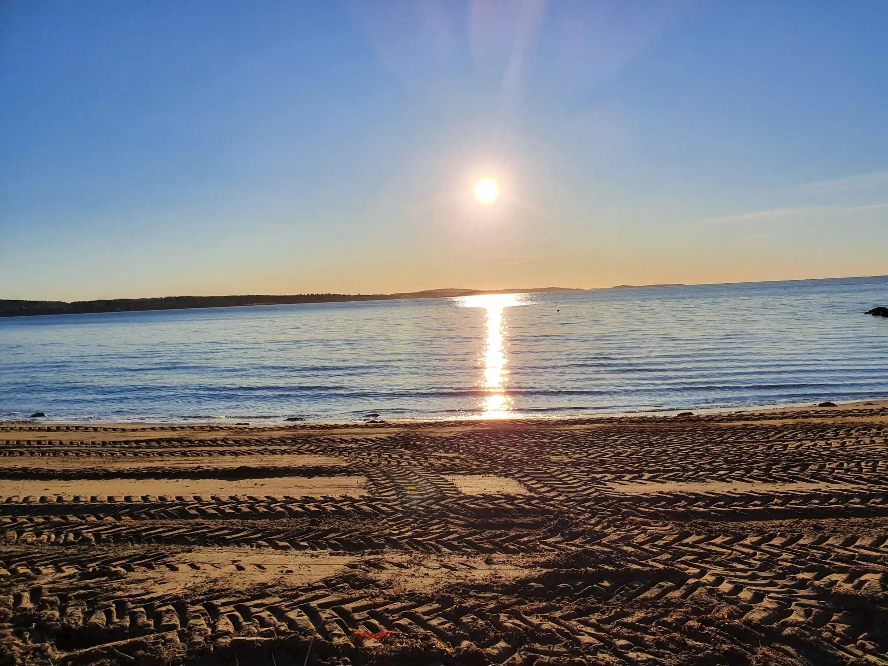

Enkelttime
Samtaleterapi
For deg som ønsker noen å snakke med om det som er krevende, eller vil utforske egne behov og veien videre.
50 minutter900 krLes om tilbudet
Saphira Bjørnå · Psykoterapeut
Samtaler med tid, omtanke og plass til hele deg. Møt meg i Moss eller online.

Samtaler & veiledning
Kanskje står du i noe vanskelig. Kanskje ønsker du å forstå deg selv bedre. Her finner du tid og rom til å begynne der du er.

Enkelttime
For deg som ønsker noen å snakke med om det som er krevende, eller vil utforske egne behov og veien videre.
Dobbeltime
Når du ønsker litt mer tid i samtalen. Et lengre møte med plass til å fordype seg i det du står i.
For terapeuter
Faglig refleksjon og klientveiledning for deg som arbeider som terapeut eller er under utdanning.
For studenter
Ekstra veiledning for deg som arbeider med en bachelor- eller masteroppgave. Tilgjengelig online.

Kartlegging, forberedelse og behandling
Et forløp som starter med kartlegging og forberedelse. Kontakt Saphira for å avklare innhold, egnethet og pris.
Oppgitte priser er i NOK, eks. mva. Faktura sendes i etterkant med 8 dagers betalingsfrist.

Med blikk for hele mennesket.
Din samtalepartner
Jeg er Saphira. Som psykoterapeut møter jeg deg med respekt for både historien din og mennesket du er i dag.
Over 20 års erfaring med psykosyntese, arbeid innen psykisk helse og rusomsorg, og mange år som lærer har formet måten jeg lytter og arbeider på.
Doktorgrad i psykoterapi
Middlesex University, London
Psychosynthesis Psychotherapy
University of East London
Det kan være noe bestemt som gjør vondt. Eller en følelse av at noe trenger å få mer plass. Begge deler er en grunn til å ta kontakt.
Du kan ta opp bekymring, lav selvfølelse eller følelsen av ikke å strekke til. I en første samtale avklarer vi hva du trenger, og om tilbudet passer for deg.
Samlivsbrudd, tap, familieforhold og det å være pårørende kan vekke mange følelser. Samtalen kan gi rom for å utforske din opplevelse.
Spørsmål om hvem du er, hva som er viktig for deg og hva du ønsker videre, kan være utgangspunktet for samtalen.
Saphira har erfaring fra rusomsorg og har forsket på viljens dynamikk i behandling av rusavhengighet. Ta kontakt for å avklare din situasjon.
Et helhetlig blikk på mennesket.
Kropp, tanker, følelser og mening.
Ring for en gratis telefonkonsultasjon. Du kan fortelle kort hva du ønsker hjelp med.
Vi snakker om behovene dine og vurderer om Saphiras kompetanse passer for deg.
Avtal et møte eller bruk den eksisterende kalenderen. Flere tilbud er tilgjengelige online.
Godt å vite
Åslia 7, 1512 Moss
Flere tilbud er tilgjengelige online.
Mandag–torsdag
Kl. 08.00–17.00
Fra 16 år.
Ingen øvre aldersgrense.
Faktura i etterkant.
8 dagers betalingsfrist. Priser eks. mva.
Ja. Saphira tilbyr en gratis telefonkonsultasjon for å avklare behov og om hun har riktig kompetanse for deg. Ring +47 928 90 162.
Saphira arbeider gjennom aktiv lytting og samtale. Psykosyntese har et helhetlig perspektiv og kan inkludere andre verktøy når det føles riktig for deg.
Ta kontakt for en individuell avklaring av behov, utfordringer og hvor du er i forløpet. Saphira vurderer om hun kan tilby terapi eller støttesamtaler, eller om annen hjelp er mer passende.
Du kan bestille gjennom Saphiras eksisterende bookingkalender. Bruk knappen på den aktuelle tjenesten for å se tilgjengelige tider.
Forskning & formidling
Saphiras doktorgradsarbeid utforsker viljens dynamikk i behandling av rusavhengighet. Hun har også lang erfaring som lærer og foreleser ved psykoterapiutdanninger i Norge og Sverige.
Den første kontakten
Du er velkommen til en gratis telefonkonsultasjon. Sammen avklarer vi hva du trenger, og om jeg er rett samtalepartner for deg.